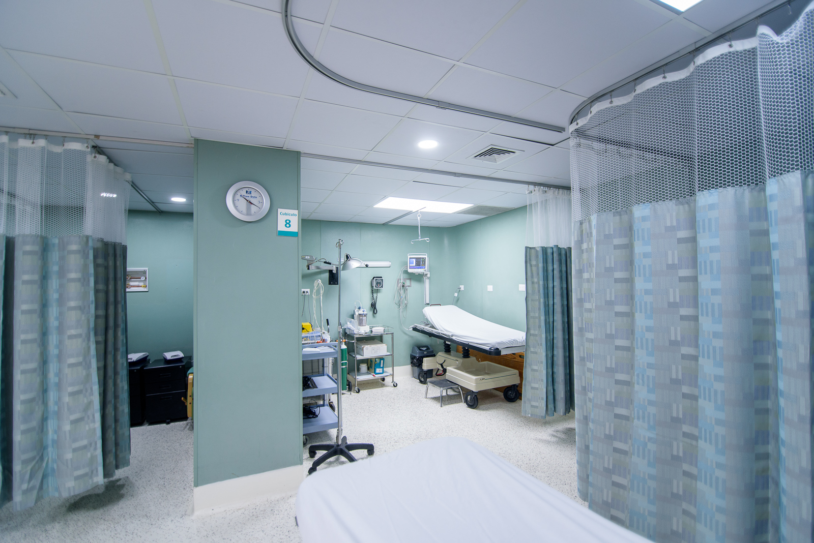

A Medical Clinic iniciou suas atividades no ano de 2012 na cidade de Sorocaba.Com custo acessível realizamos um trabalho sério e com muita dedicação. A Nossa clínica oferece atendimento em diversas especialidades, exames laboratoriais e de imagem. É perfeita para quem não tem plano de saúde e até mesmo para os usuários dos convênios, que preferem ser atendidos com agilidade e rapidez, do que esperar mais de um mês para conseguir horário com um médico especialista.
Localizado próximo ao centro da cidade, trata-se de uma clínica médica humanizada, portadora de cadeira de rodas para melhor locomoção e elevador, se necessário. Contamos com salas especializadas para cada profissional e aparelhos necessários, oferecendo maior comodidade e melhor atendimento ao paciente.
Nossa clínica é composta por uma equipe multidisciplinar, formada por cirurgiões dentistas e médicos especialistas em saúde integrativa, que trabalham juntos em harmonia para fornecer um atendimento completo, integrado e único aos nossos pacientes. Valorizamos e investimos na capacitação e desenvolvimento profissional de nossa equipe, garantindo que todos os membros estejam atualizados com as últimas tendências e avanços na área de medicina. Isso nos permite oferecer tratamentos de ponta e serviços de alta qualidade aos nossos pacientes, proporcionando resultados eficazes e seguros.
O trabalho em equipe é uma parte essencial de nossa filosofia. Nossos profissionais são encorajados a colaborar e trocar conhecimentos, o que resulta em uma abordagem holística e integrada no cuidado aos pacientes. Acreditamos que o trabalho em equipe é fundamental para o sucesso de nossa clínica, permitindo-nos fornecer um atendimento abrangente e personalizado, adaptado às necessidades individuais de cada paciente.
Além disso, valorizamos e reconhecemos a importância de cada membro de nossa equipe. Nosso ambiente de trabalho é baseado no respeito mútuo, na valorização das habilidades e experiências de nossos profissionais e na promoção de um clima de trabalho positivo e colaborativo. Isso resulta em uma equipe motivada, comprometida e apaixonada pelo que faz, o que se reflete na qualidade dos serviços que oferecemos.
Nossa clínica é um local onde os pacientes são recebidos com atenção e empatia, e onde nossos profissionais trabalham juntos de forma harmoniosa para alcançar os melhores resultados possíveis. Estamos comprometidos em proporcionar uma experiência excepcional aos nossos pacientes, onde a excelência profissional, o trabalho em equipe e a valorização de nossos profissionais são os pilares do nosso sucesso. Esperamos recebê-lo em nossa clínica de medicina avançada em breve, onde você será atendido por uma equipe altamente qualificada, comprometida em fornecer os melhores cuidados para você. Agende uma consulta conosco e descubra como podemos ajudá-lo a alcançar seus objetivos de bem-estar de forma segura, eficaz e natural!
